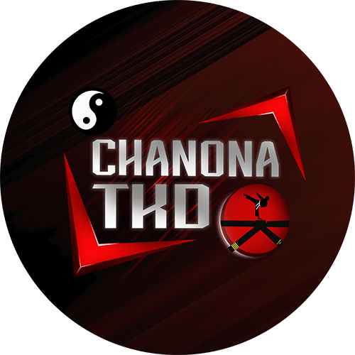
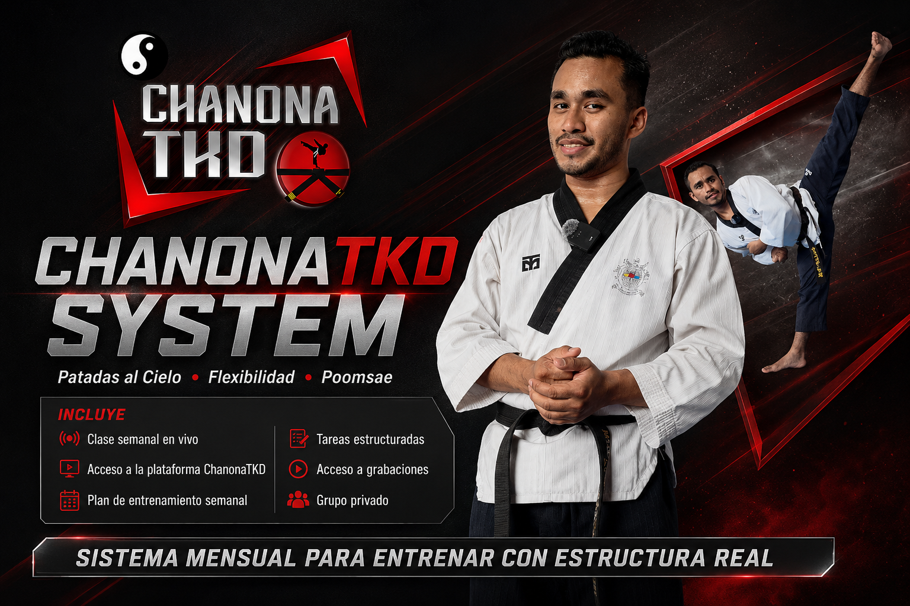

Academia Digital CTKD
Estudia explicaciones organizadas, pausa, repite y practica a tu ritmo.
Explorar Academia
ChanonaTKDEntrena con direcciónEntiende cómo desarrollar tus patadas, flexibilidad y Poomsae. Aprende por qué funciona cada ejercicio y elige cómo quieres avanzar: a tu ritmo, con una ruta semanal o directamente conmigo.

Los testimonios de esta revisión son ejemplos ficticios para evaluar el diseño. No son valoraciones reales.
Explora una copia de la ruta real de Principiantes: días, ejercicios, indicaciones, repeticiones y descansos. Los reproductores de esta demostración usan un video provisional, no los enlaces privados del alumnado.
Muestra gratuita · Sin registro · No modifica entrenamientos realesLos tres programas trabajan flexibilidad, pateo y Poomsae. La diferencia es cómo recibes el acompañamiento.
Estudia explicaciones organizadas, pausa, repite y practica a tu ritmo.
Explorar AcademiaEntrena con planificación, continuidad, plataforma y una ruta adaptada por niveles.
Explorar SystemRecibe análisis de tu ejecución y seguimiento directo de acuerdo con tus objetivos.
Explorar PersonalTe ayudaré a identificar qué tipo de dirección puede funcionarte mejor.